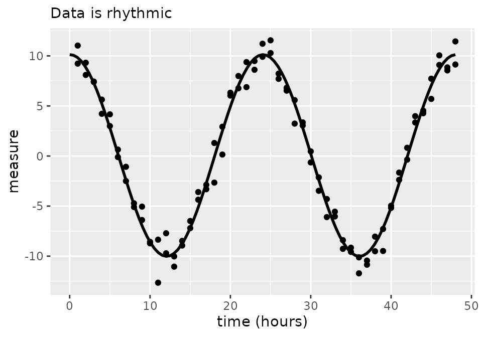
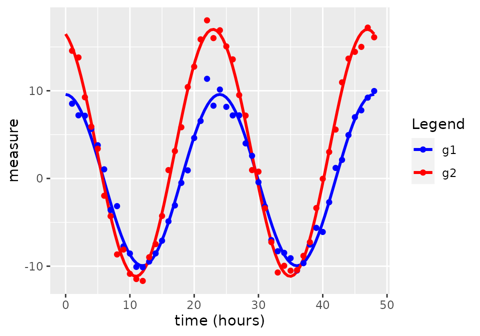
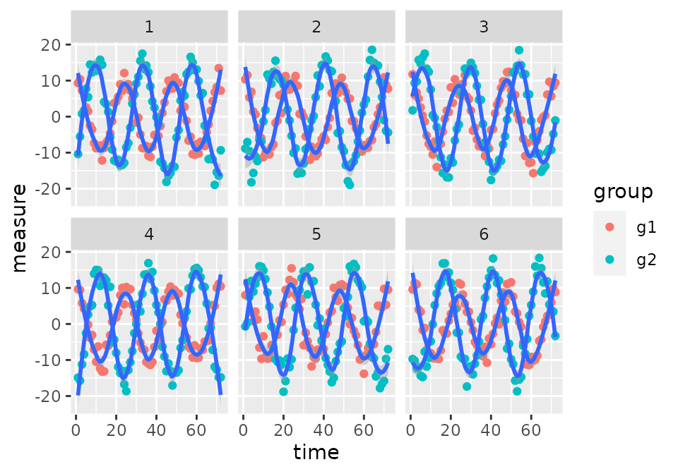
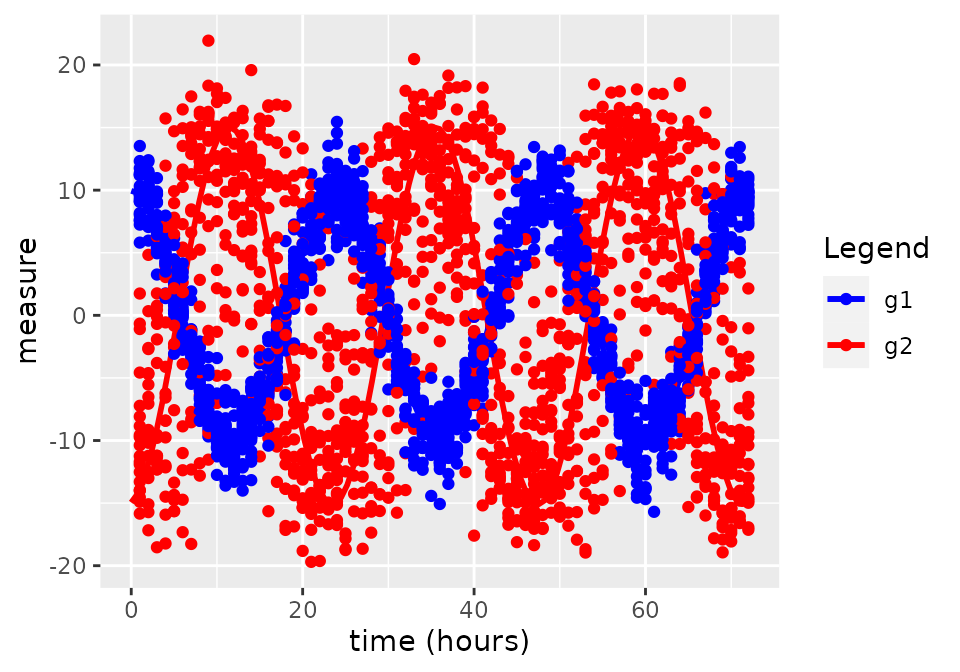
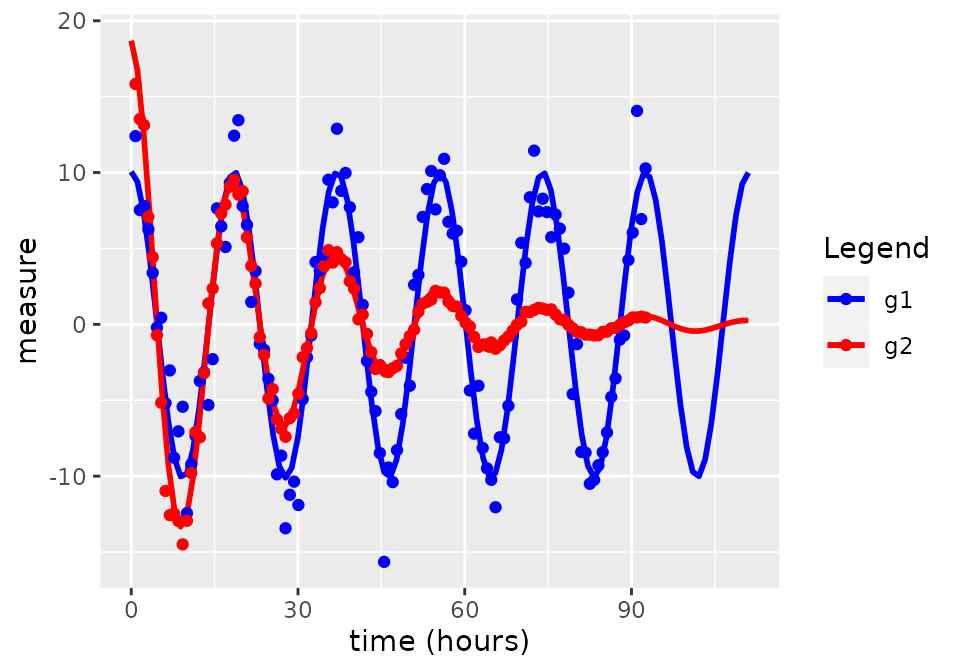

circacompare
circacompare.RmdUpdates since the initial release (circacompare 0.1.0) and Bioinformatics journal article.
There have been several added features to the current version of the
circacompare package since the publication in Bioinformatics and initial
release on CRAN. Many of the possible uses for this package are not
described in the manuscript. The approach to compare two groups of
rhythmic data, regarding mesor, amplitude and phase, as described in the
manuscript, can be completed by using the circacompare()
function under the default settings in any version of the package. In
addition to this, the current version offers approaches to:
- Perform analysis on a single rhythmic dataset to estimate its mesor, amplitude and phase.
- Choose to use a known period (user-determined) or to let the model estimate the period from the data.
- Add parameters to estimate the exponential decay in any of the rhythmic characteristics.
- Use a mixed-model instead of a fixed effects model to take into account within-subject correlation regarding any set of rhythmic characteristics.
- Perform a comparison between groups regarding all or a subset of rhythmic characteristics.
Introduction to circacompare, using fixed-effects only models and no customized model parametrization
Input data
The first part of using circacompare to analyse your data is to ensure that your data is formatted correctly. All of the functions within the circacompare package expect that your data will be of a tidy format, meaning that each row will contain only one observation, with columns to represent the time, group or subject ID for that observation.
In the simplest case, you may have a single rhythm for which you’re wanting to estimate the mesor, amplitude and phase. In this case, you only need a variable for the time of observation and the outcome which you’re wanting to model.
set.seed(42)
data_single <- make_data(k1 = 0, alpha1 = 0, phi1 = 0, noise_sd = 1)[c("time", "measure")]
head(data_single)
#> time measure
#> 1 1 11.0302167
#> 2 2 8.0955559
#> 3 3 7.4341962
#> 4 4 5.6328626
#> 5 5 2.9924588
#> 6 6 -0.1061245In the case that you have data from two groups and you’re wishing to determine the differences in mesor, amplitude, or phase between them, you will need an additional column (with two possible values) representing the groups.
data_grouped <- make_data(phi1 = 6, noise_sd = 1)
head(data_grouped)
#> time measure group
#> 1 1 8.527520 g1
#> 2 2 7.201040 g1
#> 3 3 7.151050 g1
#> 4 4 5.653204 g1
#> 5 5 3.789156 g1
#> 6 6 1.044751 g1
tail(data_grouped)
#> time measure group
#> 91 43 10.95842 g2
#> 92 44 13.66312 g2
#> 93 45 14.43497 g2
#> 94 46 15.00277 g2
#> 95 47 17.20176 g2
#> 96 48 16.09730 g2
circa_single()
circa_single() is used to analyse a single rhythm and
provide estimates of its mesor, amplitude and phase.
result <- circa_single(x = data_single, col_time = "time", col_outcome = "measure", period = 24)
result
#> $fit
#> Nonlinear regression model
#> model: measure ~ k + (alpha) * cos((1/period) * time_r - (phi))
#> data: x
#> k alpha phi
#> 0.05322 10.07049 0.01645
#> residual sum-of-squares: 101.8
#>
#> Number of iterations to convergence: 5
#> Achieved convergence tolerance: 1.141e-07
#>
#> $summary
#> parameter value
#> 1 rhythmic_p 2.524709e-80
#> 2 mesor 5.322133e-02
#> 3 amplitude 1.007049e+01
#> 4 phase_radians 1.645014e-02
#> 5 peak_time_hours 6.283491e-02
#> 6 period 2.400000e+01
#>
#> $plot
The fitted model is included as the first element of the results.
It fits a model: measure ~ k + alpha * cos(time_r - phi)
where
measureis the outcome of interestkis the mesoralphais the amplitudetime_ris the time in radian-hours, andphiis the amount of phase shift (fromtime=0) in radian-hours.
The parameter estimates of time in radian-hours (time_r
and phi) are converted back to hours and reported in the
data.frame (second element of list) and x-axis of the graph
(third item of list)
circacompare()
circacompare() is used to analyse a dataset with two
groups of rhythmic data. It fits a model to estimate and statistically
support differences in mesor, amplitude and phase between the two
groups.
result2 <- circacompare(x = data_grouped, col_time = "time", col_group = "group", col_outcome = "measure")
result2
#> $plot
#>
#> $summary
#> parameter value
#> 1 Presence of rhythmicity (p-value) for g1 3.232079e-41
#> 2 Presence of rhythmicity (p-value) for g2 3.863382e-50
#> 3 g1 mesor estimate -1.842953e-01
#> 4 g2 mesor estimate 2.921261e+00
#> 5 Mesor difference estimate 3.105556e+00
#> 6 P-value for mesor difference 2.041190e-29
#> 7 g1 amplitude estimate 9.767675e+00
#> 8 g2 amplitude estimate 1.408205e+01
#> 9 Amplitude difference estimate 4.314378e+00
#> 10 P-value for amplitude difference 6.866192e-29
#> 11 g1 peak time hours 2.396898e+01
#> 12 g2 peak time hours 2.294131e+01
#> 13 Phase difference estimate -1.027669e+00
#> 14 P-value for difference in phase 1.138807e-19
#> 15 Shared period estimate 2.400000e+01
#>
#> $fit
#> Nonlinear regression model
#> model: measure ~ (k + k1 * x_group) + ((alpha + alpha1 * x_group)) * cos((1/period) * time_r - ((phi + phi1 * x_group)))
#> data: x
#> k k1 alpha alpha1 phi phi1
#> -0.1843 3.1056 9.7677 4.3144 12.5582 -0.2690
#> residual sum-of-squares: 74.18
#>
#> Number of iterations to convergence: 4
#> Achieved convergence tolerance: 7.333e-08This fits a model:
measure ~ k + k1 * x_group + (alpha + alpha1 * x_group) * cos(time_r - (phi + phi1 * x_group))
where
x_groupis a dummy variable which represents the different groups:x_group=0andx_group=1for the first and second group, respectivelymeasureis the outcome of interestkis the mesor of the first groupk1is the difference in mesor between the first and second groupalphais the amplitude of the first groupalpha1is the difference in amplitude between the first and second grouptime_ris the time in radian-hoursphiis the amount of phase-shift of the first group (fromtime=0) in radian-hours, andphi1is the amount of phase-shift of the second group from the first group in radian-hours
The time-related parameter estimates (phi and
phi1) are converted from radian-hours to hours before being
used to report g1 peak time, g2 peak time, and
phase difference estimate.
The second item of the result2 list is a data.frame
containing the important results from the model. It returns estimates
and for the rhythmic parameters for each group as well as the p-values
associated with those which represent differences between the groups
(k1, alpha1, phi1).
More detailed outputs from the model can be obtained from the model itself
When to use what
If you are looking to estimate the rhythmic parameters of a single
group, use circa_single(). If you are looking to estimate
the differences between two rhythmic datasets, use
circacompare()
If your data has a hierarchical structure, a mixed model may be more
appropriate (keep reading). This may be the case if you have repeated
measurements from the same subjects/tissues over time, for example. In
this case, consider the equivalents of the above:
circa_single_mixed() and circacompare_mixed().
In addition to what has been described, these mixed models require the
user to specify which parameters ought to have a random effect and the
identifying column (col_id) for this hierarchical
structure.
Mixed-model variants and how to customize the parameterization of the model
Firstly, a mention on control and model parameters
When we refer to parameters, we are talking about covariates in the model being fit that will represent rhythmic characteristics of the data. Arguments are what the user (you) supplies when calling the function.
For all of the circacompare functions, the argument
control contains a list of optional arguments that can be
used to modify the parameterization of the model being fit. This list
includes main_params, decay_params,
rand_params, group_params which are all
character vectors. The naming conventions of values within these vectors
is consistent with our model formulas described earlier: “k” for mesor,
“alpha” for amplitude, “phi” for phase. The additional parameter we
introduce here is “tau” for period.
In circa_single() there are no groups to model
differences between so group_params is ignored. Since there
are also no random effects, rand_params is also ignored.
Only the main_params and decay_params are
considered. Similarly, circacompare() considers
main_params, decay_params, and ignores
rand_params(), but also includes group_params
as it is used to consider the differences between groups. Only the
mixed-model variants of these two functions,
circa_single_mixed() and circacompare_mixed(),
consider rand_params.
For the main_params vector, the possible values are
k for the mesor, alpha for amplitude,
phi for phase, and tau. The only optional
parameter of these in the main_params is tau,
the rest must be included at all times. The default is
main_params=c("k", "alpha", "phi"), which excludes the
parameterization of period in the model.
The values within decay_params must be a set within
main_params as, for example, we can’t model the decay in
period, without modeling the starting period. The default is to not
model decay of any rhythmic characteristics:
decay_params=c().
Additional possible arguments in the control list
are:
-
period_paramadds"tau"to themain_paramsifTRUE; default:period_param=FALSE. -
period_minestimated bottom range for period starting values when performing nonlinear regression; default:period_min=20. -
period_maxestimated upper range for period starting values when performing nonlinear regression;period_max=28,
If you are modeling non-circadian (but still rhythmic) data, with a
much larger or smaller period than 24 hours, and you want to have the
model estimate the period (tau) you can change
period_min and period_max to more realistic
ranges. This may reduce the time required for the model to converge.
Note that when adding parameters to decay_params, you
should call the name of the parameter in as it is in main_params -
decay_params=c("k"), for example. This will add a new
parameter k_decay to the model. If you want to add a
grouping parameter to this decay parameter, you need to call the decay
of mesor explicitly, group_params=c("k_decay"), as
"k" alone would be referring to the mesor value, not the
decay of mesor over time.
Similarly, when adding parameters as random-effects by adding to
rand_params, we need to call the parameter name (including
it’s suffix: “_decay” for decay parameters and
“1” for group parameters, or “_decay1” for
grouped decay parameters). If I wanted to fit a model with the default
main_params as well as period (tau), a decay
in mesor (k), and grouping on mesor decay rate, amplitude
and phase, but not starting mesor:
control=list(main_params=c("k", "alpha", "phi", "tau"), decay_params=c("k"), group_params=c("k_decay", "alpha", "phi"))
The resulting model will assume that both groups have a shared mesor
and period as "k" and "tau", respectively, are
excluded from group_params. The model will estimate the
period from the data. It will model the exponential decay in mesor as
well as the influence of group assignment on this rate of decay.
Examples
If you have repeated measures data, then it may be inappropriate to use a standard fixed effects only model. In this case, you should use a mixed model, with context-relevant random effects for the ID/subjects/mice from which you’re obtaining repeated observations.
Here, I have some data that has some simulated within-id correlation in terms of the amount of phase shift between groups.
phi1_in <- 3
mixed_data <- function(n) {
counter <- 1
for (i in 1:n) {
x <- make_data(k1 = 0, alpha1 = 5, phi1 = rnorm(1, phi1_in, 1), hours = 72, noise_sd = 2)
x$id <- counter
counter <- counter + 1
if (i == 1) {
res <- x
} else {
res <- rbind(res, x)
}
}
return(res)
}
df <- mixed_data(20)
out <- circacompare_mixed(
x = df,
col_time = "time",
col_group = "group",
col_outcome = "measure",
col_id = "id",
control = list(grouped_params = c("alpha", "phi"), random_params = c("phi1")),
period = 24,
suppress_all = TRUE
)
ggplot(data = df[df$id %in% c(1:6), ], aes(time, measure)) +
geom_point(aes(col = group)) +
geom_smooth(aes(group = interaction(as.factor(id), group)), span = 0.3) +
facet_wrap(~id)
For each subject (id), there are measurements in both
groups (g1 and g2) but the degree of change in
phase between g1 to g2 is subject-dependent.
The phase of group 1 is not subject-dependent, though, as each subject
has approximately the same phase in g1. However, it’s the
amount of phase shift from g1 to g2 that is
subject-dependent. This is equivalent to each subject having a random
slope term but not a random intercept. In an experimental context, this
could be the case when mice are kept under light-dark (LD) conditions
g1 and then moved to constant conditions (LL or DD),
g2. We would expect the phase to be consistent under the
same conditions in g1 but the change in phase when they are
moved to LL or DD could be mouse-dependent.
In this scenario, we want to have a “random-slope” on the phase, so
we should include phi1 as a random effect. Also, since we
know (from the data generating process) that both groups share the same
mesor but not amplitude, we included alpha and
phi as grouped parameters, but excluded k. We
also know that the period is 24 hours, so we didn’t bother fitting a
parameter period either (adding "tau" to
main_params) so we left main_params at its
default value: main_params=c("k", "alpha", "phi"). In the
code above, we used:
control=list(grouped_params=c("alpha", "phi"), random_params=c("phi1"))
From the data generating process used above, we expect:
phi1=3alpha1=5
out$plot
summary <- as.data.frame(circacompare:::extract_model_coefs(out$fit))
summary$`95% CI ll` <- summary$estimate - summary$std_error * 1.96
summary$`95% CI ul` <- summary$estimate + summary$std_error * 1.96
summary
#> estimate std_error p_value 95% CI ll 95% CI ul
#> k -0.030108418 0.037543899 4.226472e-01 -0.103694459 0.04347762
#> alpha 9.973999567 0.075087709 0.000000e+00 9.826827657 10.12117148
#> phi 0.005516318 0.007528311 4.637752e-01 -0.009239171 0.02027181
#> alpha1 5.099811194 0.106190057 0.000000e+00 4.891678682 5.30794370
#> phi1 2.992445863 0.193146837 4.776699e-52 2.613878062 3.37101366The effects were all pretty well estimated, given the 95% confidence
intervals from the model outputs. If we expect the subject’s to have
different starting phases but their change in phase between groups to be
the same, we may have put the random effect on phi rather
than phi1.
Perhaps more commonly applicable would be if each subject has some
random mesor or baseline expression level. In this case, it may be
worthwhile to include k as a random effect. If
k is included, this is equivalent to giving all subjects a
“random intercept” as baseline levels of the outcome for each subject
will be the random effect.
Period and decay parameters
There is the option to add parameters to represent the decay of any rhythmic characteristic as well as the difference between groups for this decay. For model below, we make simulated data with no difference in mesor or phase between groups, a randomly generated period between 8 and 20 hours that we want to estimate (and will check at the end). We also have one group which has exponentially decaying amplitude at the rate:
\[
\alpha*e^{-\alpha_{decay}*t}
\] Where alpha is the amplitude, and t
is time in radian-hours.
In our case, alpha_decay will be another randomly
generated value, somewhere between 0.02 and 0.05, that we will check at
the end.
To model these data, we will include all the standard parameters as
well as tau (to estimate the period) in the
main_params:
main_params=c("k", "alpha", "phi", "tau")
We will include the term for amplitude (alpha) in the
decay_params: decay_params=c("alpha")
And we will model the differences between groups for both the
starting amplitude,alpha, and its decay over time
alpha_decay:
grouped_params=c("alpha", "alpha_decay")
This produces the following model:
measure~k+((alpha+alpha1*x_group)*exp(-(alpha_decay+alpha_decay1*x_group)*time_r))*cos((24/(tau))*time_r-(phi))
tau_in <- runif(1, 8, 20)
alpha_decay1_in <- runif(1, 0.02, 0.05)
df <- make_data(k1 = 0, alpha1 = 10, phi1 = 0, seed = 42, hours = 120, noise_sd = 2)
df$time <- df$time / 24 * tau_in
# Note that when decay is estimated, it is on a scale of time in hours. There is no relation decay rate and the period.
df$measure[df$group == "g2"] <- df$measure[df$group == "g2"] * exp(-alpha_decay1_in * df$time[df$group == "g2"])
out_alpha_decay <-
circacompare(
x = df, "time", "group", "measure", period = NA,
control = list(
main_params = c("k", "alpha", "phi", "tau"),
decay_params = c("alpha"),
grouped_params = c("alpha", "alpha_decay"),
period_min = 2, period_max = 24
)
)
#> Error in numericDeriv(form[[3L]], names(ind), env, central = nDcentral) :
#> Missing value or an infinity produced when evaluating the model
#> Error in stats::nls(formula = form, data = data, start = starting_params, :
#> singular gradient
#> Error in numericDeriv(form[[3L]], names(ind), env, central = nDcentral) :
#> Missing value or an infinity produced when evaluating the model
#> Error in stats::nls(formula = form, data = data, start = starting_params, :
#> singular gradient
#> Error in stats::nls(formula = form, data = data, start = starting_params, :
#> singular gradient
#> Error in stats::nls(formula = form, data = data, start = starting_params, :
#> singular gradient
#> Error in stats::nls(formula = form, data = data, start = starting_params, :
#> singular gradient
#> Error in stats::nls(formula = form, data = data, start = starting_params, :
#> singular gradient
#> Error in stats::nls(formula = form, data = data, start = starting_params, :
#> step factor 0.000488281 reduced below 'minFactor' of 0.000976562
#> Error in numericDeriv(form[[3L]], names(ind), env, central = nDcentral) :
#> Missing value or an infinity produced when evaluating the model
#> Error in stats::nls(formula = form, data = data, start = starting_params, :
#> singular gradient
#> Error in stats::nls(formula = form, data = data, start = starting_params, :
#> singular gradient
#> Error in stats::nls(formula = form, data = data, start = starting_params, :
#> singular gradient
#> Error in stats::nls(formula = form, data = data, start = starting_params, :
#> singular gradient
#> Error in stats::nls(formula = form, data = data, start = starting_params, :
#> singular gradient
#> Error in stats::nls(formula = form, data = data, start = starting_params, :
#> singular gradient
#> Error in numericDeriv(form[[3L]], names(ind), env, central = nDcentral) :
#> Missing value or an infinity produced when evaluating the model
#> Error in stats::nls(formula = form, data = data, start = starting_params, :
#> singular gradient
#> Error in numericDeriv(form[[3L]], names(ind), env, central = nDcentral) :
#> Missing value or an infinity produced when evaluating the model
#> Error in stats::nls(formula = form, data = data, start = starting_params, :
#> singular gradient
#> Error in stats::nls(formula = form, data = data, start = starting_params, :
#> step factor 0.000488281 reduced below 'minFactor' of 0.000976562
#> Error in stats::nls(formula = form, data = data, start = starting_params, :
#> number of iterations exceeded maximum of 50
#> Error in numericDeriv(form[[3L]], names(ind), env, central = nDcentral) :
#> Missing value or an infinity produced when evaluating the model
#> Error in stats::nls(formula = form, data = data, start = starting_params, :
#> singular gradient
#> Error in stats::nls(formula = form, data = data, start = starting_params, :
#> singular gradient
#> Error in stats::nls(formula = form, data = data, start = starting_params, :
#> step factor 0.000488281 reduced below 'minFactor' of 0.000976562
#> Error in stats::nls(formula = form, data = data, start = starting_params, :
#> singular gradient
#> Error in stats::nls(formula = form, data = data, start = starting_params, :
#> singular gradient
#> Error in stats::nls(formula = form, data = data, start = starting_params, :
#> singular gradient
#> Error in stats::nls(formula = form, data = data, start = starting_params, :
#> number of iterations exceeded maximum of 50
#> Error in stats::nls(formula = form, data = data, start = starting_params, :
#> number of iterations exceeded maximum of 50
#> Error in stats::nls(formula = form, data = data, start = starting_params, :
#> singular gradient
#> Error in stats::nls(formula = form, data = data, start = starting_params, :
#> singular gradient
#> Error in stats::nls(formula = form, data = data, start = starting_params, :
#> singular gradient
#> Error in stats::nls(formula = form, data = data, start = starting_params, :
#> singular gradient
#> Error in numericDeriv(form[[3L]], names(ind), env, central = nDcentral) :
#> Missing value or an infinity produced when evaluating the model
#> Error in stats::nls(formula = form, data = data, start = starting_params, :
#> singular gradient
#> Error in stats::nls(formula = form, data = data, start = starting_params, :
#> singular gradient
#> Error in stats::nls(formula = form, data = data, start = starting_params, :
#> singular gradient
#> Error in numericDeriv(form[[3L]], names(ind), env, central = nDcentral) :
#> Missing value or an infinity produced when evaluating the model
#> Error in stats::nls(formula = form, data = data, start = starting_params, :
#> singular gradient
#> Error in stats::nls(formula = form, data = data, start = starting_params, :
#> singular gradient
#> Error in numericDeriv(form[[3L]], names(ind), env, central = nDcentral) :
#> Missing value or an infinity produced when evaluating the model
#> Error in numericDeriv(form[[3L]], names(ind), env, central = nDcentral) :
#> Missing value or an infinity produced when evaluating the model
#> Error in stats::nls(formula = form, data = data, start = starting_params, :
#> singular gradient
#> Error in numericDeriv(form[[3L]], names(ind), env, central = nDcentral) :
#> Missing value or an infinity produced when evaluating the model
#> Error in stats::nls(formula = form, data = data, start = starting_params, :
#> singular gradient
#> Error in numericDeriv(form[[3L]], names(ind), env, central = nDcentral) :
#> Missing value or an infinity produced when evaluating the model
#> Error in stats::nls(formula = form, data = data, start = starting_params, :
#> singular gradient
#> Error in stats::nls(formula = form, data = data, start = starting_params, :
#> singular gradient
#> Error in stats::nls(formula = form, data = data, start = starting_params, :
#> singular gradient
#> Error in stats::nls(formula = form, data = data, start = starting_params, :
#> singular gradient
#> Error in stats::nls(formula = form, data = data, start = starting_params, :
#> singular gradient
#> Error in stats::nls(formula = form, data = data, start = starting_params, :
#> singular gradient
#> Error in stats::nls(formula = form, data = data, start = starting_params, :
#> step factor 0.000488281 reduced below 'minFactor' of 0.000976562
#> Error in numericDeriv(form[[3L]], names(ind), env, central = nDcentral) :
#> Missing value or an infinity produced when evaluating the model
#> Error in stats::nls(formula = form, data = data, start = starting_params, :
#> singular gradient
#> Error in stats::nls(formula = form, data = data, start = starting_params, :
#> singular gradient
#> Error in stats::nls(formula = form, data = data, start = starting_params, :
#> singular gradient
#> Error in stats::nls(formula = form, data = data, start = starting_params, :
#> number of iterations exceeded maximum of 50
#> Error in numericDeriv(form[[3L]], names(ind), env, central = nDcentral) :
#> Missing value or an infinity produced when evaluating the model
#> Error in numericDeriv(form[[3L]], names(ind), env, central = nDcentral) :
#> Missing value or an infinity produced when evaluating the model
#> Error in stats::nls(formula = form, data = data, start = starting_params, :
#> singular gradient
#> Error in stats::nls(formula = form, data = data, start = starting_params, :
#> singular gradient
#> Error in stats::nls(formula = form, data = data, start = starting_params, :
#> singular gradient
#> Error in stats::nls(formula = form, data = data, start = starting_params, :
#> singular gradient
#> Error in stats::nls(formula = form, data = data, start = starting_params, :
#> singular gradient
#> Error in numericDeriv(form[[3L]], names(ind), env, central = nDcentral) :
#> Missing value or an infinity produced when evaluating the model
#> Error in stats::nls(formula = form, data = data, start = starting_params, :
#> singular gradient
#> Error in stats::nls(formula = form, data = data, start = starting_params, :
#> step factor 0.000488281 reduced below 'minFactor' of 0.000976562
#> Error in stats::nls(formula = form, data = data, start = starting_params, :
#> singular gradient
#> Error in stats::nls(formula = form, data = data, start = starting_params, :
#> singular gradient
#> Error in numericDeriv(form[[3L]], names(ind), env, central = nDcentral) :
#> Missing value or an infinity produced when evaluating the model
#> Error in numericDeriv(form[[3L]], names(ind), env, central = nDcentral) :
#> Missing value or an infinity produced when evaluating the model
#> Error in stats::nls(formula = form, data = data, start = starting_params, :
#> singular gradient
#> Error in stats::nls(formula = form, data = data, start = starting_params, :
#> step factor 0.000488281 reduced below 'minFactor' of 0.000976562
#> Error in numericDeriv(form[[3L]], names(ind), env, central = nDcentral) :
#> Missing value or an infinity produced when evaluating the model
#> Error in stats::nls(formula = form, data = data, start = starting_params, :
#> singular gradient
#> Error in stats::nls(formula = form, data = data, start = starting_params, :
#> singular gradient
#> Error in numericDeriv(form[[3L]], names(ind), env, central = nDcentral) :
#> Missing value or an infinity produced when evaluating the model
#> Error in numericDeriv(form[[3L]], names(ind), env, central = nDcentral) :
#> Missing value or an infinity produced when evaluating the model
#> Error in stats::nls(formula = form, data = data, start = starting_params, :
#> singular gradient
#> Error in stats::nls(formula = form, data = data, start = starting_params, :
#> singular gradient
#> Error in numericDeriv(form[[3L]], names(ind), env, central = nDcentral) :
#> Missing value or an infinity produced when evaluating the model
#> Error in stats::nls(formula = form, data = data, start = starting_params, :
#> singular gradient
out_alpha_decay$plot
summary <- as.data.frame(circacompare:::extract_model_coefs(out_alpha_decay$fit))
summary$`95% CI ll` <- summary$estimate - summary$std_error * 1.96
summary$`95% CI ul` <- summary$estimate + summary$std_error * 1.96
summary$p_value <- NULL
summary
#> estimate std_error 95% CI ll 95% CI ul
#> k -3.395691e-02 0.1013869255 -0.232675281 0.164761467
#> alpha 1.009223e+01 0.4052065165 9.298025134 10.886434679
#> alpha_decay 5.435973e-05 0.0007432627 -0.001402435 0.001511155
#> alpha1 8.632203e+00 0.8813658989 6.904725702 10.359680026
#> alpha_decay1 3.739104e-02 0.0023140206 0.032855564 0.041926524
#> tau 1.850420e+01 0.0327072885 18.440090205 18.568302776
#> phi 1.338657e-02 0.0270874943 -0.039704918 0.066478060We now have estimates and 95% confidence intervals for the difference
in amplitude decay between groups (alpha_decay1) and the
period (tau) that were of interest. Lets see the values we
used to generate the data and check that the confidence intervals were
appropriate.
cat("Real period: ", tau_in, "\n",
"Real alpha_decay: ", alpha_decay1_in,
sep = ""
)
#> Real period: 18.50667
#> Real alpha_decay: 0.03999372Looks like our estimates and confidence intervals suited our now-known data generating process well!
Limitations
Decay functions
Currently, decay parameters are used to model exponential decay as this seemed sensible for most biological contexts. However, users may want to model decay as a linear (or some other) function. There is no implementation for this in the current package. If this is of interest to you, please contact me or create an issue on GitHub.
Period and phase parameters
It may be tempting to investigate the differences between two groups
of rhythmic data regarding everything! But, unfortunately, there are
limitations. If two groups of data are allowed to vary regarding their
period, the interpretation of a difference in phase is no longer
appropriate. For example, if two rhythms have different periods, at what
time are you wanting to know the difference in phase between the groups?
The amount of phase-shift will differ over time if they have different
periods. For this reason, you cannot have both tau and
phi within group_params in either
circacompare() or circacompare_mixed().
Model diagnostics and choice
When using circa_single() or circacompare() a nonlinear regression
model (with fixed-effects only) of class nls is fit. When
using circa_single_mixed() or circacompare_mixed() a nonlinear mixed
regression model of class nlme is fit. Users should be
aware of the assumptions of these models when interpreting the results.
See here for a
thorough discussion of model assumptions and performing diagnostic tests
using the nlstools package.